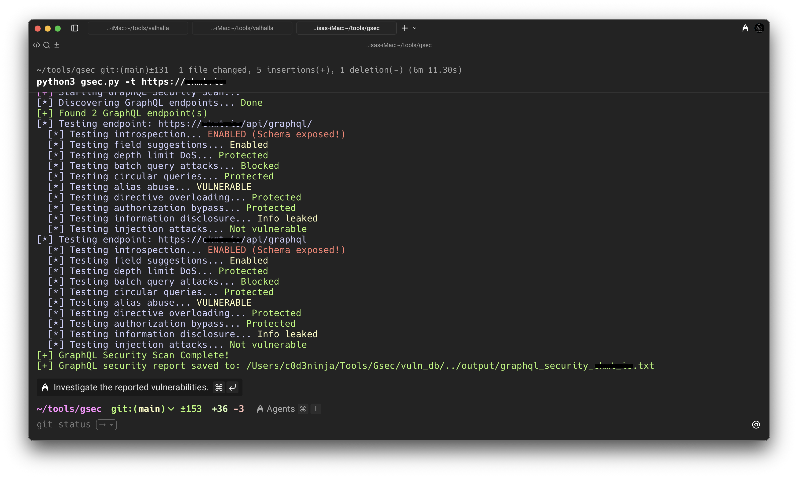
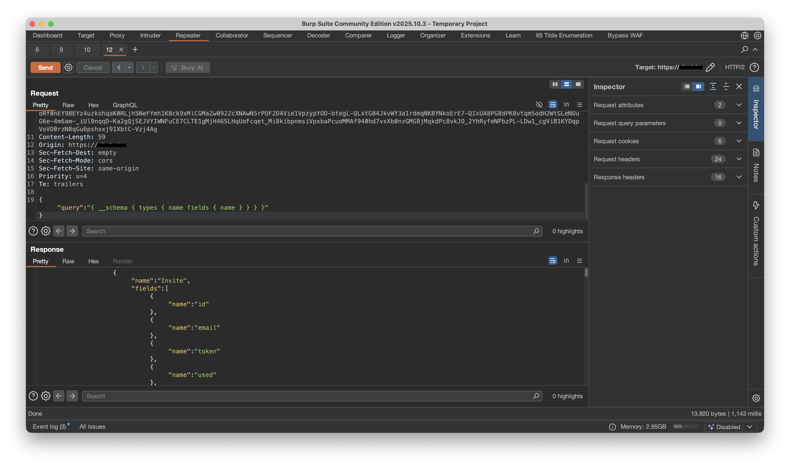
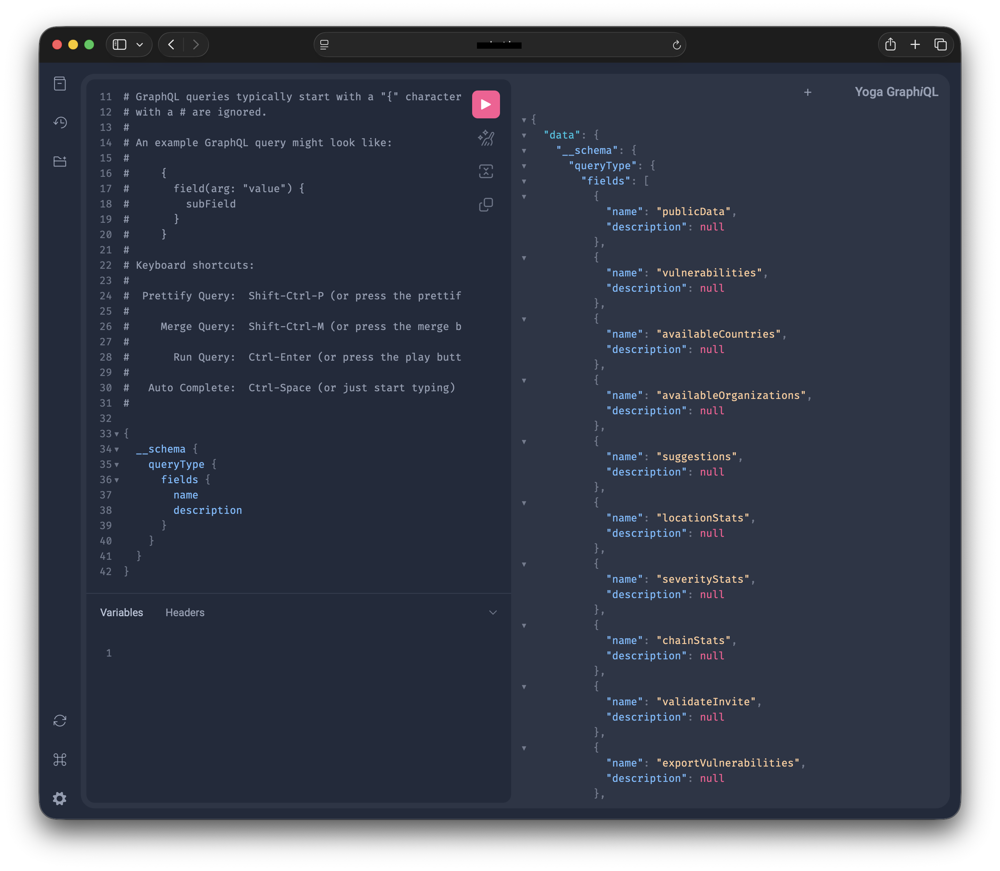

What is GraphQL?
GraphQL is a query language and runtime for APIs, developed by Facebook. GraphQL allows clients to request exactly the data they need in a single request, unlike REST APIs where you often get fixed data structures from multiple endpoints.
Let's talk about the introspection feature in GraphQL
GraphQL introspection allows clients to query the GraphQL server itself to discover information about the schema it implements. These are types of objects, fields and arguments, queries and mutations. You can now picture how this can become a security risk if it's enabled in a production environment especially for internal or sensitive APIs.
What's the impact of this vulnerability?
GraphQL API endpoint
The endpoint was located at https://redacted.com/api/graphql
How did we find the vulnerability?
I found the vulnerability using a vulnerability scanner that I coded named Gsec, this tool performs Passive and Aggressive scans to find vulnerabilities and misconfigurations. This is the best web application penetration testing tool I've ever used.

As you can see in the image above, it identified the introspection vulnerability with no problem, I then visited the GraphQL endpoint that I mentioned earlier to test introspection queries.

I used Burp Suite to intercept the traffic and to test the queries. As you can see above, the queries worked, I can see sensitive fields that I can later use to keep enumerating and extract more information about the GraphQL server.
To add insult to injury, they also had a Yoga GraphiQL endpoint, which allows us to test queries with ease, this endpoint makes our life even easier Lol.

GraphQL introspection in production is like leaving your building blueprints taped to the front door. Sure, it's convenient for the architect, but it's even more convenient for the burglar. Disable it, test your endpoints, and don't give attackers the keys to your API kingdom.